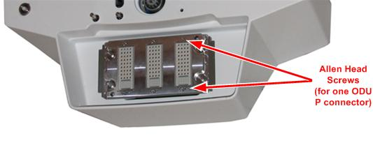
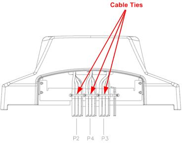

Operating Documentation
Direction 5670006, Rev# 1
Discovery MR750w GEM Service Methods
Module Version 3.0, Version Date 7/21/11
Operating Documentation |
| Required Persons | Preliminary Reqs | Procedure | Finalization |
|---|---|---|---|
| 2 | 90 mins for non-GEM; 110 mins for GEM | 15 minutes |
The Dock contains three connector plates that pass data from the Patient Table to the RF Hub. Signals flow from the Table to the system by way of several cables with connecting points. The most important connection takes place where the Patient Table connects to the magnet via the Dock. This document describes replacing the Dock side of this connection.
When the Patient Table and Dock are connected, data travels between two types of connectors: coax for RF signal and pin/socket for control.
| Item | Qty | Effectivity | Part# | Manufacturer | |
|---|---|---|---|---|---|
| MCRv tool (3.0T) | 1 | - | 5182417-2 | - | |
| Non-magnetic tool kit | 1 | - | 5112581 | - | |
| Item | Qty | Effectivity | Part# | Manufacturer |
|---|---|---|---|---|
| Loctite 242 Threadlocker, medium strength | 0.5CC | - | - | - |
| Item | Qty | Effectivity | Part# | Manufacturer | |
|---|---|---|---|---|---|
| Self-Locking Cable Tie | 5 | - | 46-208758P3 | - | |
| Harness, ODU, GEM, Dock Side P2 | 1 | - | See FRU Manual | - | |
| Harness, ODU, GEM, Dock Side P3 | 1 | - | See FRU Manual | - | |
| Harness, ODU, GEM, Dock Side P4 | 1 | - | See FRU Manual | - | |
| ||||
| ELECTROCUTION HAZARD! | ||||
| HIGH VOLTAGE PRESENT. | ||||
| USE PROPER LOCK OUT / TAG OUT PROCEDURES BEFORE servicing and/or maintaining THE DOCK. |
| ||||
| POSSIBLE PERSONAL INJURY! | ||||
| The Dock connector replacement procedure requires movement of ferrous material in close proximity to the magnet. | ||||
| Therefore two Field Engineers are required at all times. |
| ||||
| Personal injury and equipment damage | ||||
| Strong Magnetic Field | ||||
| When servicing any magnetic equipment, it is critically
important that the service engineer consciously plan the path to be
taken when moving highly ferrous devices in the magnet environment.
the path should be as far from the magnet as practical and avoid high
flux-density fields. Safety Requirements
When planning a service path, it is critical that the path be clear and sufficiently wide. Ensure that there are no trip hazards, obstacles, clutter, slippery surfaces, or other items even partially restricting the path. If there are portable obstacles in a path, remove them from the area and replace them after the service action is completed. It is required to walk the path prior to beginning service to ensure that there is sufficient space through which to pass for yourself and the object being serviced. |
Follow instructions in Dock Removal and Installation to remove Dock from the magnet room.
Proceed to the next section.
When the Dock is outside of the magnet room, using a 3/4-inch wrench, remove four bolts (two on each side) to unfasten the Dock cover from the Dock base.
Illustration 1: Side View of Dock

| NOTE: | Be sure to disconnect the Dock switch connector when removing Dock cover. |
Turn the Dock cover upside down.
| NOTE: | Be careful that you do not scratch the top of the cover. Lay down a cloth before setting it on the floor. |
Remove the two Allen head screws from the ODU P connector being replaced.
Illustration 2: Dock Cover Upside-Down View

Cut the cable tie for the ODU P connector harness being replaced.
Illustration 3: Dock Cable Ties (Rear View of Dock)

Route the cables through the opening inside the Dock cover to remove the Dock harness.
Route the replacement Dock harness through the opening in the dock cover.
Reattach the ODU P Connector to the Dock connector plate.
| ||||
| Cable tie wraps must be located over heatshrink. Make certain that the cables are not taut and verify that the weight of the cables does not load down the connector. There should be a slight loop in the cables inside the housing so that floating hardware can move. The cables should be held secure with the tie wraps so that the cables do not shift during or after installation. | ||||
Replace cable ties for the harness on the Dock cover.
Carefully turn the Dock cover right side up, reconnect the Dock switch connector, and place the Dock back on the Dock base. Reattach the Dock bolts. (See Illustration 1.)
Follow the instructions in Dock Removal and Installation to install the Dock.
Proceed to Finalization.
Verify proper operation of the Table.
Dock the Table.
Verify proper up/down Table motion.
When Table is in fully raised position, verify that the Table is level with the Bridge.
Verify that raising Table to full height results in LPCA automatically driving out to engage Cradle.
When Table is in fully raised position, verify that Cradle and LPCA can be advanced normally into bore.
Verify that lowering the Table results in automatic retraction of LPCA into Bridge.
Verify normal Cradle and LPCA motion from Home position to end of travel on Bridge using enclosure In Fast and Out Fast buttons at the Operator's Console.
Verify that the emergency release and the side latches work properly.
Run the Coil Datapath Diagnostics procedure on all P and A coil connectors to validate a successful cable signal flow.